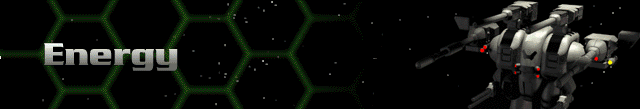

› |
› |
Energy |

Legend
Range – the maximum distance, in hexes, over which the weapon can fire.
Rounds – the number of times the weapon can fire per turn; note that some weapons fire bursts of shots with a single firing action.
Energy – total energy cost in battery or reactor power to fire the weapon once.
SDam – the total damage the weapon inflicts on the facing shield side of a target.
ADam – the total damage a weapon inflicts on the target’s armor if no shields are up.
Tech – the Technology Level at which the weapon is acquired.
| Energy Weapons | Description | Range | Rounds | Energy | SDam | ADam | Tech |
|---|---|---|---|---|---|---|---|
| SE400 Laser | The Sierra Energy 400 is the smallest energy weapon carried on a Herc chassis. It has poor damage potential, but is cheap to install and maintain. | 10 | 1 | 20 | 50 | 10 | 0 |
| SE660 Laser | This is the more powerful brother to the SE400 and is a far more useful weapon. Both range and firepower are improved. | 15 | 1 | 27 | 75 | 15 | 0 |
| SE1000 Laser Cannon | The largest and most deadly of the standard lasers, the Sierra Energy 1000 can take down the shields of most Cybrids with just a few shots. | 20 | 1 | 36 | 120 | 24 | 1 |
| Blast Mortar | An energy weapon capable of firing indirectly to affect the shields of entire groups at once. | 15 | 1 | 15 | 75 | 15 | 1 |
| SC400 Compression Laser | Sierra Combine Compression Laser technology uses magnetism to compress a light wave to amplify shock damage inflicted. The SC400 is the smallest such weapon. | 10 | 1 | 18 | 50 | 20 | 2 |
| SC1000 Compression Laser | Fully twice the size and power of the SC400. This is, overall, one of the best energy weapons a Herc can carry. | 20 | 1 | 36 | 120 | 48 | 2 |
| SCX Compression Laser | This laser carries all of the shield-busting firepower of the EMP Cannon with the punch of a large missile. Expensive, but worth it. | 15 | 1 | 48 | 180 | 72 | 2 |
| SP500 Light Pulse Laser | The third generation of laser technology, this is a rapid-fire laser that improves on the earlier laser damage capability while delivering more shots. | 10 | 1 | 30 | 150 | 30 | 6 |
| SP750 Standard Pulse Laser | A standard weapon on many Cybrids and Hercs. It is considered to be a superb balance of low cost and high energy. | 15 | 1 | 36 | 240 | 48 | 6 |
| SP1200 Magna Pulse Laser | The most devastating laser ever built, it is capable of defeating even the heaviest shielding with a burst of three shots. | 20 | 1 | 45 | 360 | 72 | 6 |
| SE700 Laser Gatling | A rapid-fire version of the standard laser that delivers a tremendous volume of deadly and accurate fire. | 18 | 4 | 10 | 64 | 12 | 7 |
| SP800 Pulse Laser Gatling | A fast firing system, this weapon can absolutely devastate a unit by tearing through its shields to the armor below. | 10 | 2 | 24 | 160 | 40 | 8 |
| Light Compression Blaster | Combines the compression laser and fusion guns to render enemy shields almost useless. | 20 | 2 | 15 | 80 | 64 | 11 |
| Heavy Compression Blaster | The finest weapon ever made. Hercs equipped with the Heavy Compression Blaster can often lay waste to entire Cybrid squads…alone. | 20 | 2 | 25 | 160 | 128 | 11 |